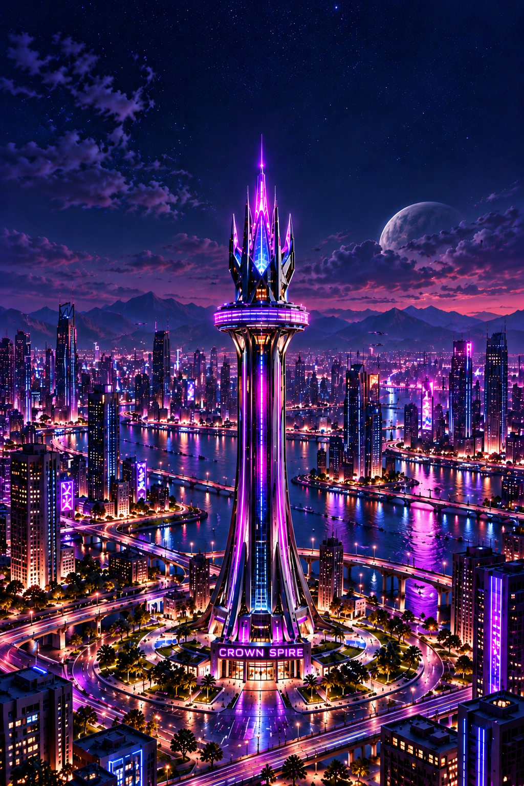
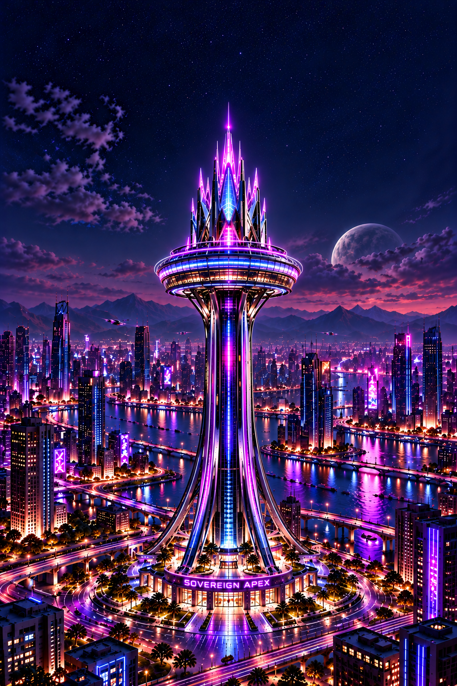
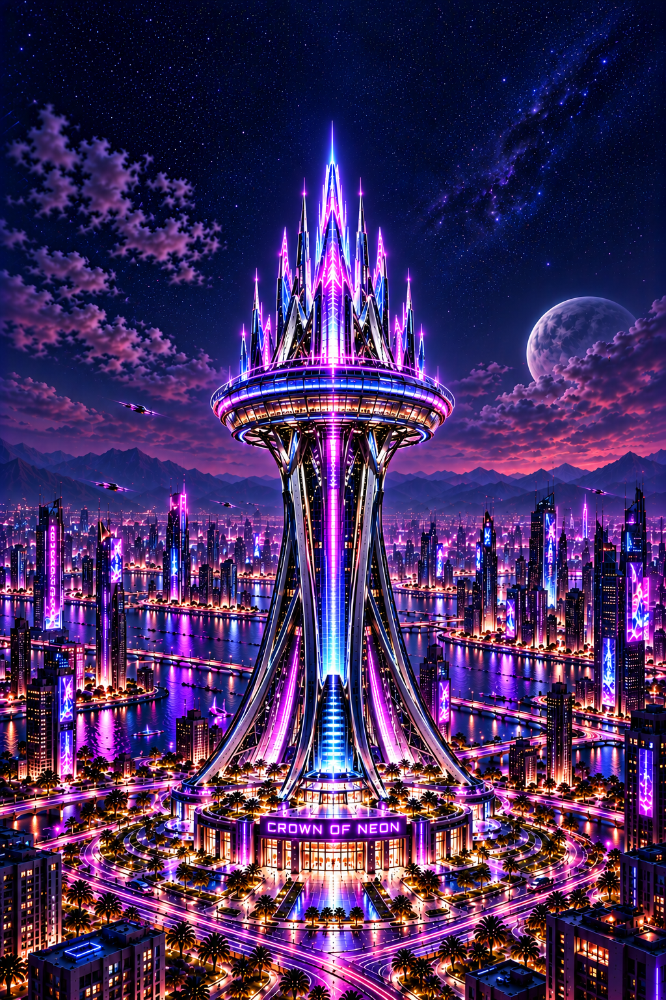

Production review only. Stages II and III now have corrected antenna clearance; full-lineage browser acceptance remains pending. These candidates are not final NFT media and Crown remains unavailable in the prototype.

Stage I candidate; awaiting full-lineage review.

Framing corrected; full-lineage and browser review pending.

Return to prototype